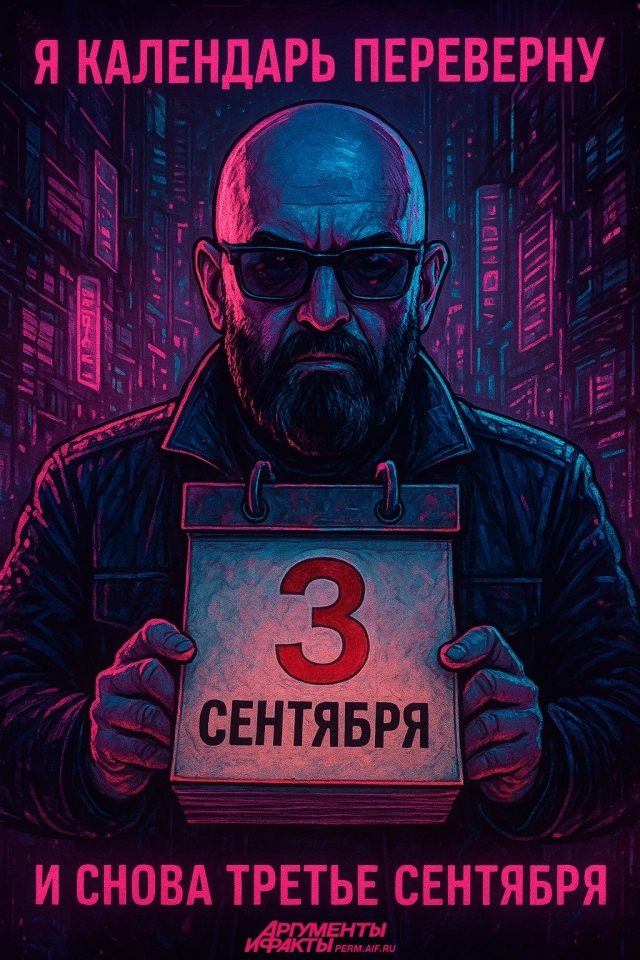
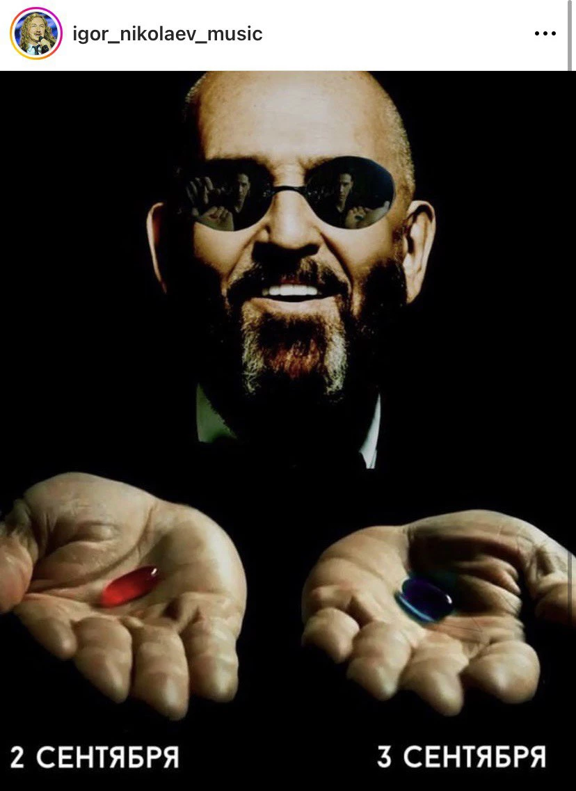

Каждый год 3 сентября вся Россия слышит одну и ту же песню. Поёт о прошлом. О том, что ушло. Но пока кто-то смотрит назад — ты можешь сделать первый подход. Сегодня — идеальный день начать.

Песня стала мемом, потом — культурным феноменом. Теперь 3 сентября — это ещё и народный праздник ностальгии. Но есть и другой способ встретить этот день.

Смотреть в окно. Вспоминать прошлое. Слушать Шафутинского на повторе. Ностальгировать о том, что не сложилось.
Первый подход. Первая запись в трекере. Первая тренировка осени. Через месяц — не узнаешь себя.
Психологически осень — это новый год. Школа, учёба, проекты. Мозг уже в режиме «старт».
Не жаркое лето, не морозная зима. Сентябрь — лучшее время для тренировок на улице и дома.
Начав сейчас, к 31 декабря вы будете в совершенно другой физической форме. Это реально.
«Начал 3 сентября» — запоминающаяся точка отсчёта. Именно так работают сильные привычки.
Специально для тех, кто давно не тренировался или начинает с чистого листа:
Парадоксально, но чувство «я хочу вернуться в форму» — сильнейший мотиватор. Именно оно заставляет людей начинать в сентябре, после лета. Помните себя более активными? Это не прошлое — это цель.
Разница между Шафутинским и спортсменом: один поёт «помню», другой делает так, чтобы вспоминать было о чём.
SportBot запишет вашу первую тренировку осени. Введите команду — и счёт пошёл. Через месяц посмотрим, что изменилось. Каждая тренировка — опыт, каждый день — стрик, каждый месяц — новый уровень.
⚔️ Начать 3 сентябряЧитайте также: Тренировки дома с нуля · 75 Hard Challenge · Калистеника для начинающих